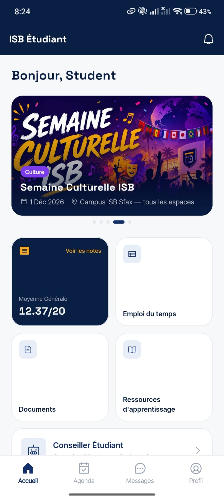
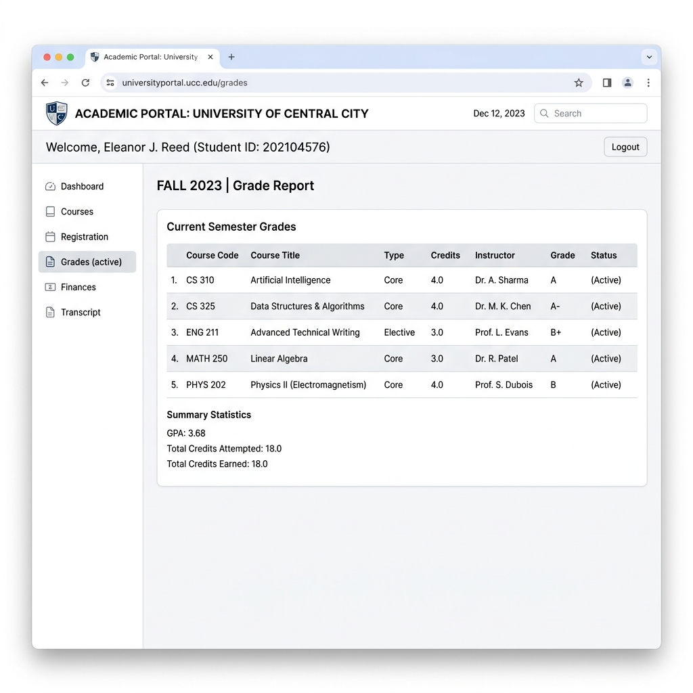
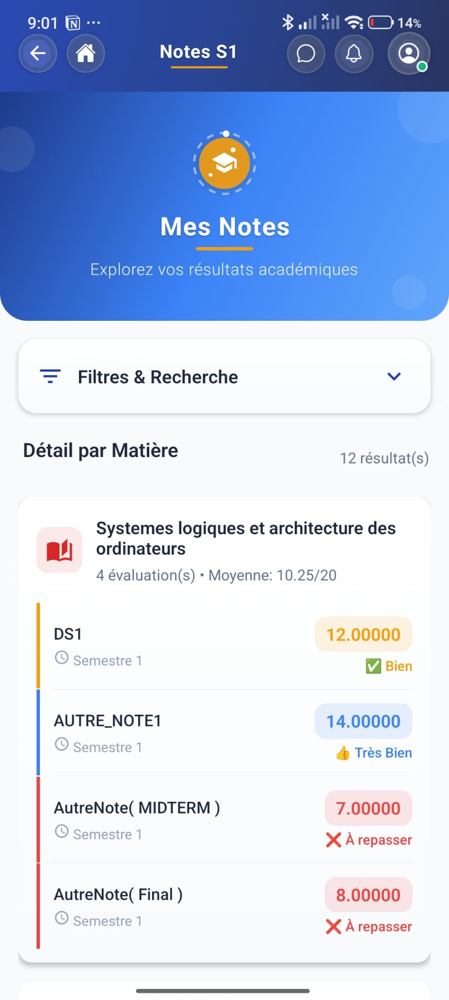
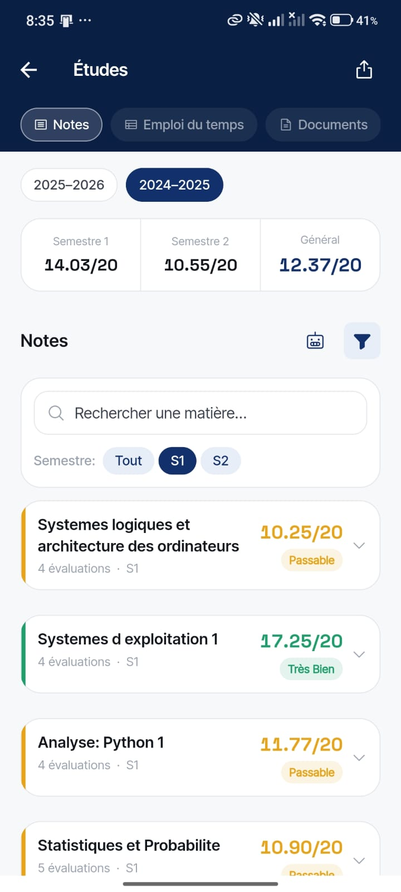
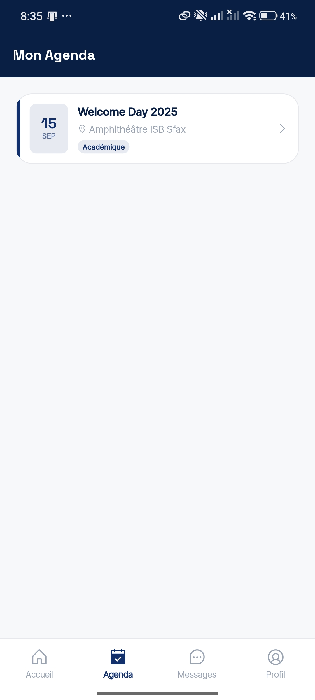
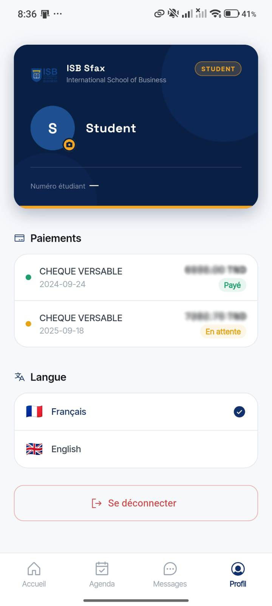
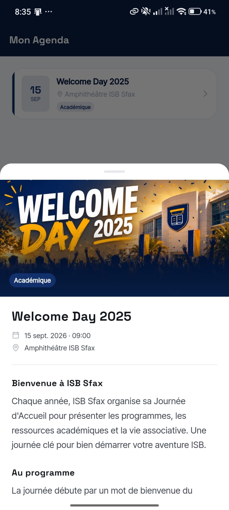
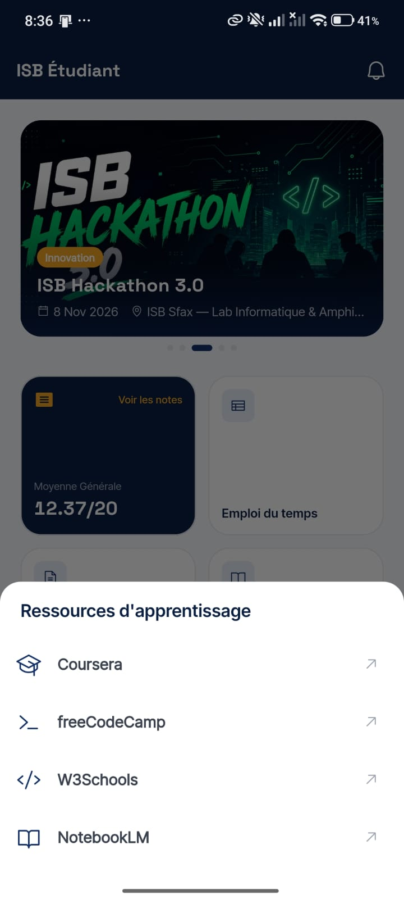

From daily frustration to a real product opportunity — a student's perspective, a working redesign, and a concrete proposal to make the ISB app something students actually want to open.

I study at ISB Sfax — and I design and ship software. Full stack developer & AI-native builder with 5+ years shipping mobile apps, digital products, and automation tools.
Fifteen seconds of credibility — then let's talk about the app.

The tool students already use
The current app's only real function is showing grades — and it does that worse than the tool students already have open.
A 2-second grade check becomes a full re-login. The headline bug.
✅👍 on an academic record reads as a toy, not an official document.
Five decimals of database precision. No human needs that.
Every surface competes. No hierarchy — the defining "vibe-coded" tell.
A search-and-filter toll booth sits above the grades you came to see.
Security and usability aren't opposites. The real fix isn't a shorter session — it's a "remember me" checkbox. Roughly 0 minutes of work.
Where you land every single time you reopen the app.
There's a real need — and real will to solve it. The execution just hasn't landed yet.
Not a reskin. A working app, running on real ISB data, that fixes every problem in the last section.



Emoji grades → color bands. A serious, scannable transcript.
Gradient soup → flat bento. Size and color now mean something.
Forced login → persistent session. Open, glance, done.
Tap the card to replay the transformation.

Welcome Day, cultural week, hackathons — the campus calendar, in your pocket.
An in-app advisor and grade assistant — answers, not another PDF to read.

Coursera, freeCodeCamp, W3Schools, NotebookLM — vetted, one tap away.
An official, properly-formatted relevé de notes — generated on demand.
One source of truth. Grades, chats and announcements mirrored both ways — so the app stops competing with Moodle and starts completing it.
The participation grade (10–30%) is usually maxed out or busywork. Turn it into Kahoot-style live quizzes — earned, fair, and actually fun.
Shareable milestones that nudge students toward their Master's — and quietly grow ISB's brand and alumni pipeline with every share.
Manage events, users and content without touching code.
AI-screened ideas, put to a student vote.
Office hours, Q&A and class threads in one place.
Lightweight updates and reminders, the format students already read.
A friendly guide for onboarding and nudges — tasteful, not a toy.
Teaching assistants get scoped tools between student and teacher.
The other side of the desk — grading, attendance, messaging.
Class-vs-class friendly competition that drives engagement.
A Duolingo-style, streak-driven revision experience.
A realistic requirements doc, signed off with the board before a line is written.
Payment gateway (Flouci), SEO tooling, internal automations — named early.no scope creep
Small, shippable increments you can see and steer every two weeks.
Fixed-price per sprint, or salaried. You only pay for working software.predictable cost
"I'll tell you upfront when something's out of scope — so we don't repeat what's happened twice before."